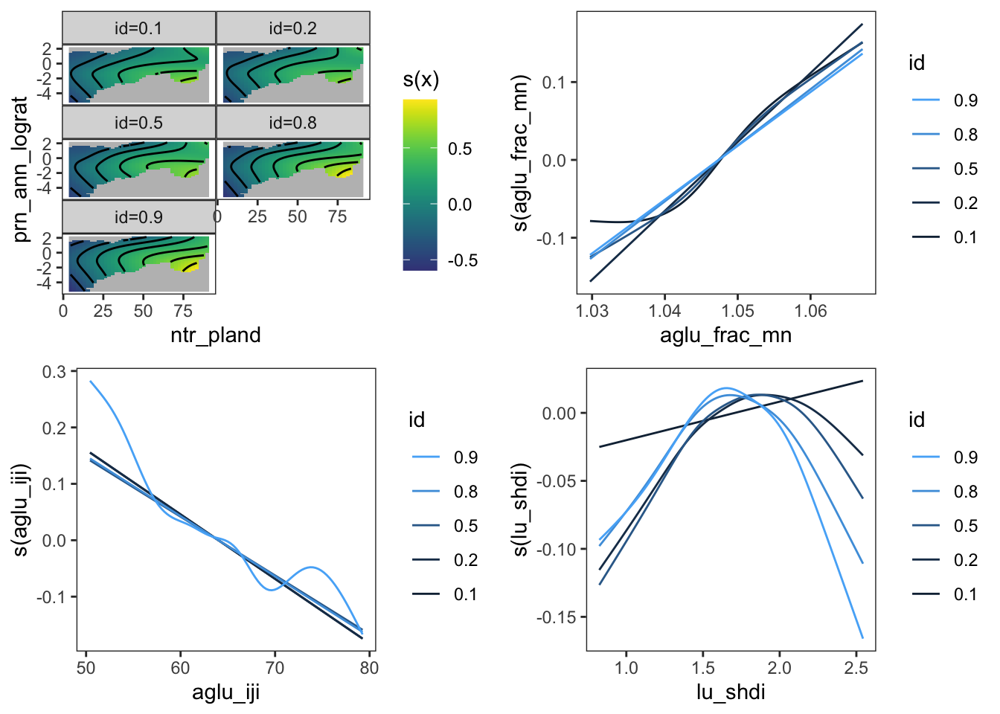
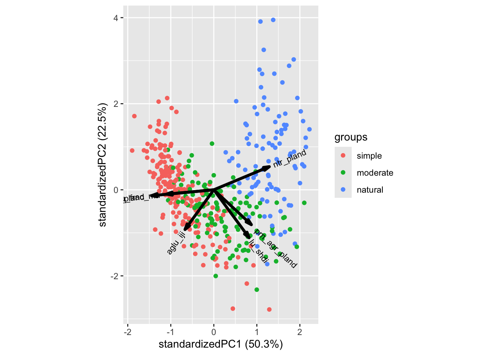
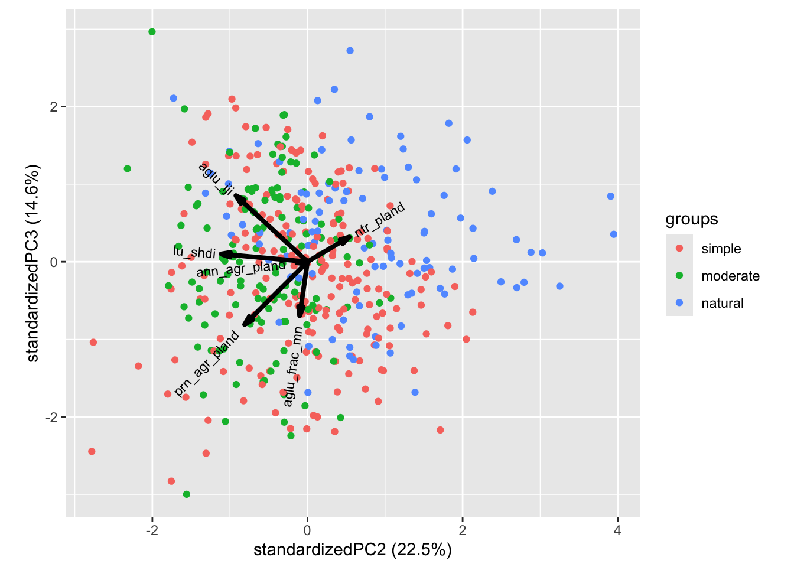
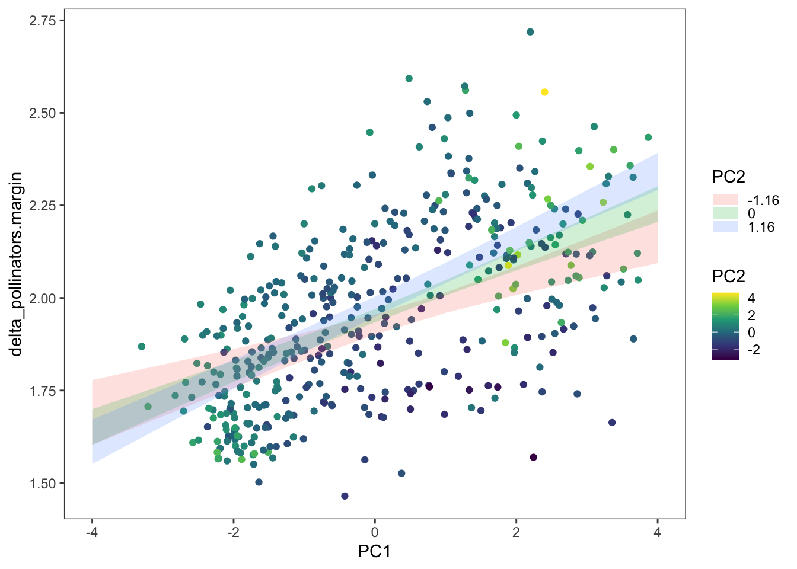
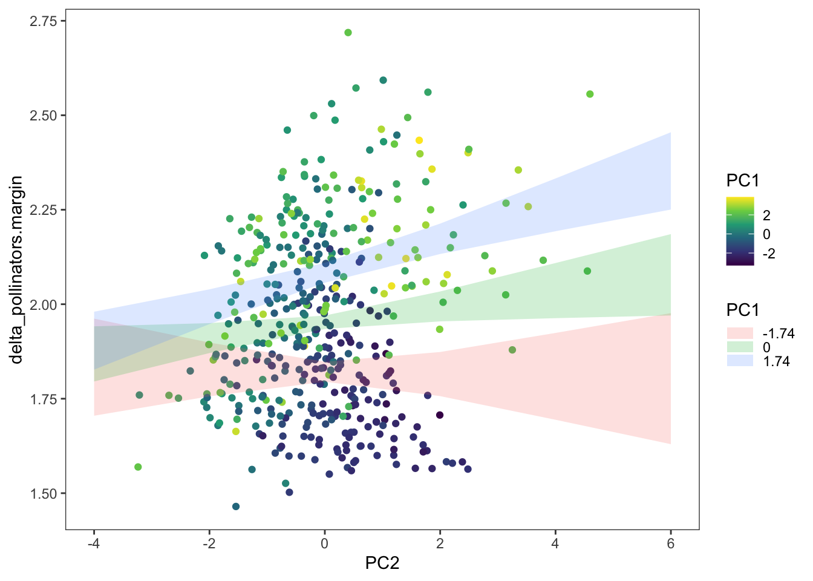
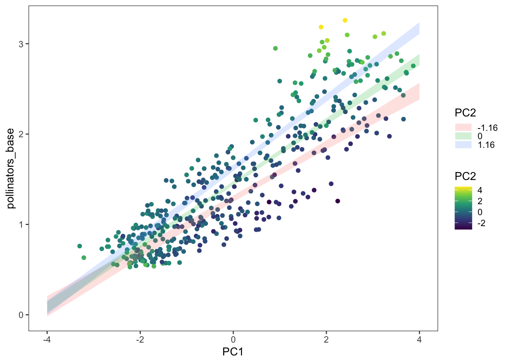
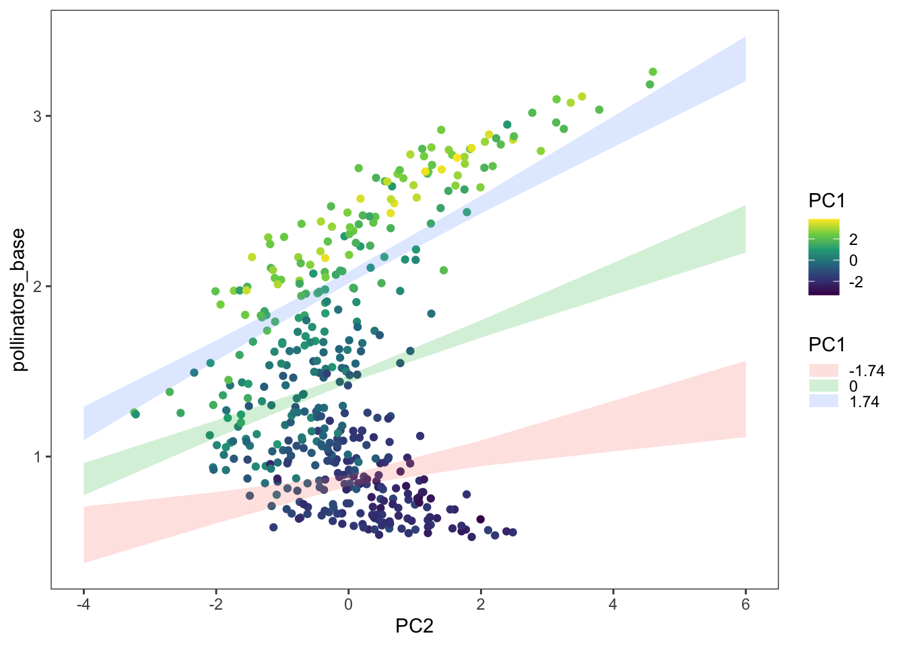
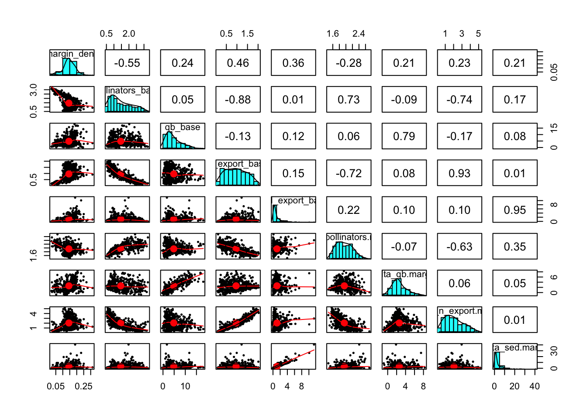

Quantile regression looks at relationships at different quantiles of response. Below I fit the change in pollinator abundance (per added margin area) to these measures of landscape complexity:
ntr_pland percent natural landprn_ann_lograt log-ratio of perennial to annual
agriculture. Here a positive value means a greater proportion of
perennial agriculture.aglu_frac_mn average fractal dimension indexaglu_iji interspersion and juxtaposition indexlu_shdi Shannon diversity of land useI ran quantile GAM regression for 0.1, 0.2, 0.5, 0.8, and 0.9
quantiles. I included an interaction between ntr_pland and
prn_ann_lograt because: 1) it is of interest whether the
role of perennial vs annual ag changes at different levels of
naturalness, and 2) ntr_pland and
prn_ann_lograg still co-vary, even though I made this index
to try to create a variable that is more independent from the main
agricultural-natural gradient. I think the interaction helps mitigate
concurvity a little.
qgam.fit <- mqgamV(delta_pollinators.margin ~
te(ntr_pland, prn_ann_lograt) +
s(aglu_frac_mn) +
s(aglu_iji) +
s(lu_shdi),
data = wfs_lsm,
qu = c(0.1, 0.2,0.5,0.8, 0.9))## Estimating learning rate. Each dot corresponds to a loss evaluation.
## qu = 0.5........done
## qu = 0.2..........done
## qu = 0.8................done
## qu = 0.1.........done
## qu = 0.9........................doneBelow are the partial effects plots for the range of modeled quantiles.

These results don’t suggest anything obviously different happening at different quantiles. Some of the extreme quantiles are different, but I don’t know how much to trust those trends.
Looking at concurvity of the same model formula fit using
mgcv, there is still some concurvity.
| .type | .term | .concurvity |
|---|---|---|
| worst | para | 0.0000000 |
| worst | te(ntr_pland,prn_ann_lograt) | 0.8067195 |
| worst | s(aglu_frac_mn) | 0.6774797 |
| worst | s(aglu_iji) | 0.7114217 |
| worst | s(lu_shdi) | 0.6904036 |
| observed | para | 0.0000000 |
| observed | te(ntr_pland,prn_ann_lograt) | 0.3104846 |
| observed | s(aglu_frac_mn) | 0.6127946 |
| observed | s(aglu_iji) | 0.6407575 |
| observed | s(lu_shdi) | 0.6269293 |
| estimate | para | 0.0000000 |
| estimate | te(ntr_pland,prn_ann_lograt) | 0.2961301 |
| estimate | s(aglu_frac_mn) | 0.4774049 |
| estimate | s(aglu_iji) | 0.5657314 |
| estimate | s(lu_shdi) | 0.5028920 |
I wonder if this is because all these metrics are calculated from the same base land use data. I expect the metrics of these watershed naturally have some correlations that limit the inferences we can make. This led me to try to identify these associations using PCA.
I ran PCA on the the following 6 landscape metrics:
ntr_pland percent natural landann_agr_pland annual agriculture percent landscapeprn_agr_pland perennial agriculture percent
landscapeaglu_frac_mn average fractal dimension indexaglu_iji interspersion and juxtaposition indexlu_shdi Shannon diversity of land useI included all the major land use groups since the point was to visualize their associations.
The first four PCs explain 95% of variation.
## Standard deviations (1, .., p=6):
## [1] 1.73765630 1.16292941 0.93454415 0.66653794 0.55547512 0.04413145
##
## Rotation (n x k) = (6 x 6):
## PC1 PC2 PC3 PC4 PC5 PC6
## ntr_pland 0.4927212 0.30682799 0.226253293 0.45878939 0.04538748 0.63193684
## ann_agr_pland -0.5531921 -0.07838320 -0.008968895 -0.36757810 0.14560769 0.72899852
## prn_agr_pland 0.3333439 -0.46289733 -0.575195337 -0.07455659 -0.51908946 0.26219398
## aglu_iji -0.2557566 -0.52712324 0.606285505 0.34893992 -0.40888082 0.01431613
## aglu_frac_mn -0.4199632 -0.05784385 -0.495166971 0.72519406 0.22157668 -0.00959293
## lu_shdi 0.3135373 -0.63579391 0.071462490 -0.03427044 0.70071732 0.01320287## Importance of components:
## PC1 PC2 PC3 PC4 PC5 PC6
## Standard deviation 1.7377 1.1629 0.9345 0.66654 0.55548 0.04413
## Proportion of Variance 0.5032 0.2254 0.1456 0.07405 0.05143 0.00032
## Cumulative Proportion 0.5032 0.7286 0.8742 0.94825 0.99968 1.00000PC1 positivley weights % natural, along with Shannon diversity and perennial agriculture to lesser degree, and negatively weights annual agriculture, fractional dimension index, and interspersion and juxtaposition index (IJI). PC1 strongly represents the natural vs (annual) agricultural gradient across the watersheds. This is evident in the biplot below, which has been colored according to simple, moderate, and natural landscape categories.

PC2 negatively and strongly weights Shannon diversity, IJI, and perennial agriculture, while positively and moderately weighting natural land cover.There is an arch shape to the point distribution of the PC1 and PC2 axes. The arch is oriented so that the negative and positive extremes of PC1 (which I’m interpreting as highly agricultural and highly natural landscapes, respectively), are both positive on the PC2 axis. I think positive PC2 values represent landscape homegeneity. Highly agricultural and highly natural landscapes are both homogeneous. Conversely, negative PC2 values are more heterogeneous, and correspond with higher Shannon diversity, interspersion, and perennial agriculture (maybe incidentally).
I am not sure how to interpret PC3. It weights perennial agriculture and fractal dimension against interspersion/juxtaposition and natural land cover.

lsm_pc <- wfs_grp %>% cbind(predict(wfs_pca_all))
pol.delt.lm1 <- lm(delta_pollinators.margin ~ PC1 + PC2, data = lsm_pc)
pol.delt.lm2 <- lm(delta_pollinators.margin ~ PC1 * PC2, data = lsm_pc)
performance::compare_performance(pol.delt.lm1,pol.delt.lm2)## # Comparison of Model Performance Indices
##
## Name | Model | AIC (weights) | AICc (weights) | BIC (weights) | R2 | R2 (adj.)
## -------------------------------------------------------------------------------------------
## pol.delt.lm1 | lm | -205.0 (0.046) | -204.9 (0.047) | -188.7 (0.270) | 0.377 | 0.375
## pol.delt.lm2 | lm | -211.1 (0.954) | -210.9 (0.953) | -190.7 (0.730) | 0.389 | 0.385
##
## Name | RMSE | Sigma
## ----------------------------
## pol.delt.lm1 | 0.190 | 0.190
## pol.delt.lm2 | 0.188 | 0.189summary(pol.delt.lm2)##
## Call:
## lm(formula = delta_pollinators.margin ~ PC1 * PC2, data = lsm_pc)
##
## Residuals:
## Min 1Q Median 3Q Max
## -0.43792 -0.15715 -0.01438 0.13886 0.58047
##
## Coefficients:
## Estimate Std. Error t value Pr(>|t|)
## (Intercept) 1.952304 0.009029 216.216 < 2e-16 ***
## PC1 0.075285 0.005716 13.172 < 2e-16 ***
## PC2 0.020941 0.009003 2.326 0.02048 *
## PC1:PC2 0.013781 0.004852 2.840 0.00472 **
## ---
## Signif. codes: 0 '***' 0.001 '**' 0.01 '*' 0.05 '.' 0.1 ' ' 1
##
## Residual standard error: 0.1888 on 433 degrees of freedom
## Multiple R-squared: 0.3889, Adjusted R-squared: 0.3846
## F-statistic: 91.84 on 3 and 433 DF, p-value: < 2.2e-16pred.PC1 <- ggeffects::ggpredict(pol.delt.lm2, terms = c("PC1","PC2")) %>%
rename(PC1 = x, delta_pollinators.margin = predicted, PC2 = group)
pred.PC2 <- ggeffects::ggpredict(pol.delt.lm2, terms = c("PC2","PC1")) %>%
rename(PC2 = x, delta_pollinators.margin = predicted, PC1 = group)
ggplot(lsm_pc, aes(PC1, delta_pollinators.margin)) +
geom_point(aes(color = PC2)) + scale_color_continuous(type = "viridis") +
geom_ribbon(data = pred.PC1,
mapping = aes(ymin = conf.low, ymax = conf.high, group = PC2, fill = PC2), alpha = 0.2) + egg::theme_article()
ggplot(lsm_pc, aes(PC2, delta_pollinators.margin)) +
geom_point(aes(color = PC1)) + scale_color_continuous(type = "viridis") +
geom_ribbon(data = pred.PC2,
mapping = aes(ymin = conf.low, ymax = conf.high, group = PC1, fill = PC1), alpha = 0.2) + egg::theme_article()
pol.base.lm1 <- lm(pollinators_base ~ PC1 + PC2, data = lsm_pc)
pol.base.lm2 <- lm(pollinators_base ~ PC1 * PC2, data = lsm_pc)
performance::compare_performance(pol.base.lm1,pol.base.lm2)## # Comparison of Model Performance Indices
##
## Name | Model | AIC (weights) | AICc (weights) | BIC (weights) | R2 | R2 (adj.)
## -----------------------------------------------------------------------------------------
## pol.base.lm1 | lm | 47.9 (<.001) | 48.0 (<.001) | 64.2 (<.001) | 0.872 | 0.872
## pol.base.lm2 | lm | 13.2 (>.999) | 13.4 (>.999) | 33.6 (>.999) | 0.883 | 0.882
##
## Name | RMSE | Sigma
## ----------------------------
## pol.base.lm1 | 0.253 | 0.254
## pol.base.lm2 | 0.243 | 0.244summary(pol.base.lm2)##
## Call:
## lm(formula = pollinators_base ~ PC1 * PC2, data = lsm_pc)
##
## Residuals:
## Min 1Q Median 3Q Max
## -0.55623 -0.19565 0.01328 0.18080 0.74799
##
## Coefficients:
## Estimate Std. Error t value Pr(>|t|)
## (Intercept) 1.455238 0.011671 124.684 < 2e-16 ***
## PC1 0.342356 0.007388 46.340 < 2e-16 ***
## PC2 0.146950 0.011638 12.627 < 2e-16 ***
## PC1:PC2 0.038599 0.006271 6.155 1.71e-09 ***
## ---
## Signif. codes: 0 '***' 0.001 '**' 0.01 '*' 0.05 '.' 0.1 ' ' 1
##
## Residual standard error: 0.244 on 433 degrees of freedom
## Multiple R-squared: 0.8826, Adjusted R-squared: 0.8818
## F-statistic: 1085 on 3 and 433 DF, p-value: < 2.2e-16pred.base.PC1 <- ggeffects::ggpredict(pol.base.lm2, terms = c("PC1","PC2")) %>%
rename(PC1 = x, pollinators_base = predicted, PC2 = group)
pred.base.PC2 <- ggeffects::ggpredict(pol.base.lm2, terms = c("PC2","PC1")) %>%
rename(PC2 = x, pollinators_base = predicted, PC1 = group)
ggplot(lsm_pc, aes(PC1, pollinators_base)) +
geom_point(aes(color = PC2)) + scale_color_continuous(type = "viridis") +
geom_ribbon(data = pred.base.PC1,
mapping = aes(ymin = conf.low, ymax = conf.high, group = PC2, fill = PC2), alpha = 0.2) + egg::theme_article()
ggplot(lsm_pc, aes(PC2, pollinators_base)) +
geom_point(aes(color = PC1)) + scale_color_continuous(type = "viridis") +
geom_ribbon(data = pred.base.PC2,
mapping = aes(ymin = conf.low, ymax = conf.high, group = PC1, fill = PC1), alpha = 0.2) + egg::theme_article()
psych::pairs.panels(wfs_lsm %>%
select(margin_dens,
pollinators_base, qb_base,
n_export_base, sed_export_base,
delta_pollinators.margin, delta_qb.margin,
delta_n_export.margin, delta_sed.margin),
cex.cor = 1, cex.labels=1, cex=0.5, method = "pearson")